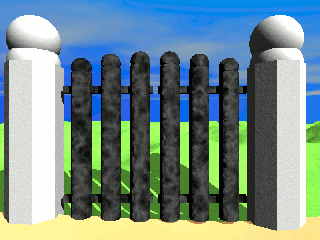

|  |
TKGate 2.2: редактор и симулятор цифровых электронных схем
© Jeffery P. Hansen, 1987-2015 Данная программа является свободным программным обеспечением. Вы вправе распространять ее и/или модифицировать в соответствии с условиями версии 2 либо по вашему выбору с условиями более поздней версии Стандартной Общественной Лицензии GNU, опубликованной Free Software Foundation. Мы распространяем данную программу в надежде на то, что она будет вам полезной, однако НЕ ПРЕДОСТАВЛЯЕМ НА НЕЕ НИКАКИХ ГАРАНТИЙ, в том числе ГАРАНТИИ ТОВАРНОГО СОСТОЯНИЯ ПРИ ПРОДАЖЕ и ПРИГОДНОСТИ ДЛЯ ИСПОЛЬЗОВАНИЯ В КОНКРЕТНЫХ ЦЕЛЯХ. Для получения более подробной информации ознакомьтесь со Стандартной Общественной Лицензией GNU. Вместе с данной программой вы должны были получить экземпляр Стандартной Общественной Лицензии GNU. Если вы его не получили, сообщите об этом в Free Software Foundation, Inc., 51 Franklin Street, Fifth Floor, Boston, MA 02110-1301 USA. |
TkGate - среда моделирования и симуляции цифровых электронных схем,
состоящая из графического редактора с интерфейсом, основанным на
tcl/tk и управляемого событиями симулятора. Поддерживаемыми
элементами схем являются МОП-транзисторы, основные вентили (И, ИЛИ,
исключающее ИЛИ), вентили с тремя состояниями, сумматоры, умножители,
регистры и пямять. Поддерживаются иерархические проекты на основе
модулей, определяемых пользователем. Сохраняемые файлы схем используют
формат списка соединений Verilog.